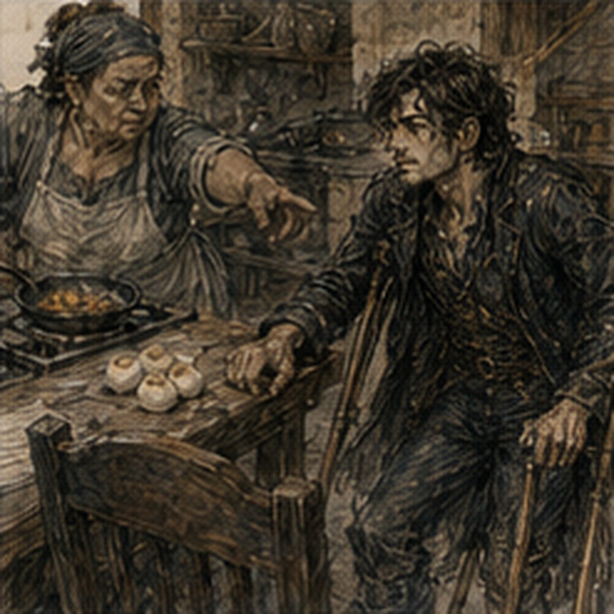
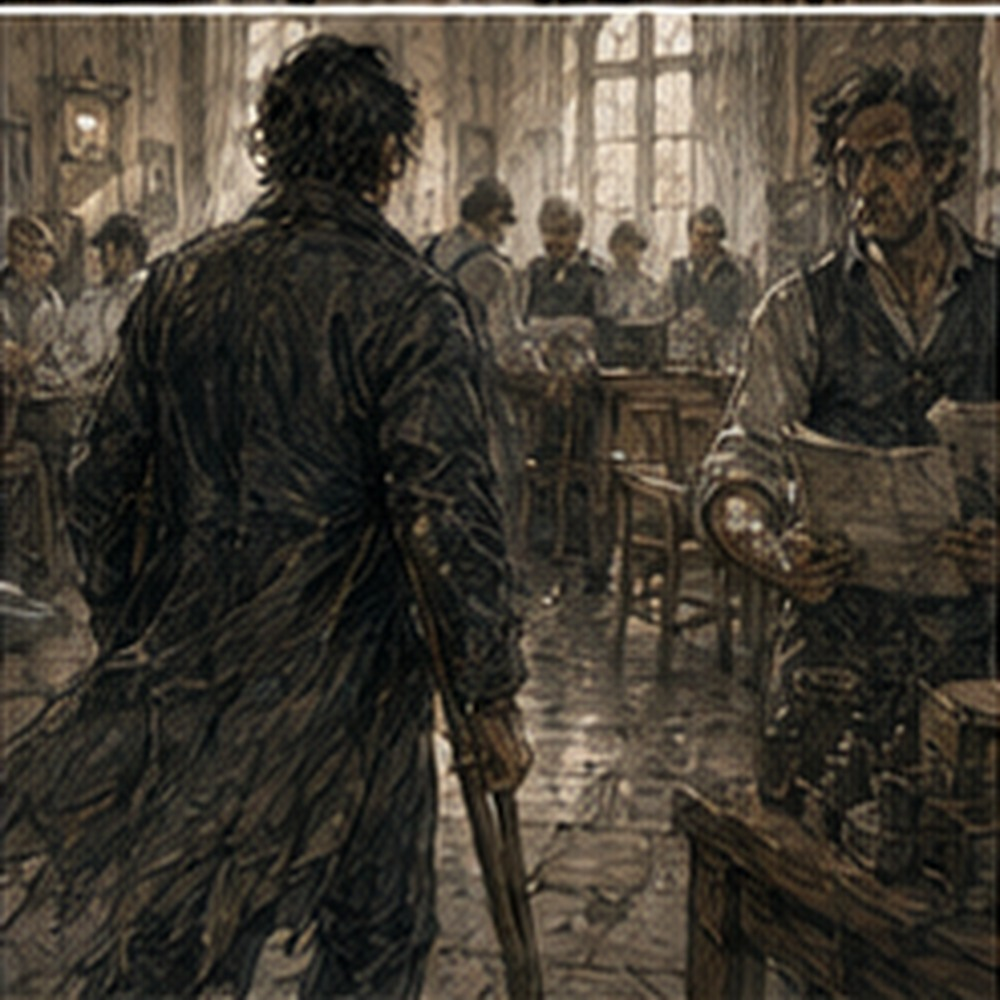

The keeper had put the water within reach. I noticed before I noticed anything else. Pitcher on the floor beside the cot. Cup on the stool. Soap moved to the crate. Calendar under the wooden horse so it would not curl. None of this had been arranged by me. I lay there staring at it. Useful. Annoying. Useful won. Then I needed to piss.
Annoying recovered. Morning. I sat up. Too fast. The room shifted. Not dizziness exactly. Sleep. Poppy. Body. I waited. Residual limb heavy. Phantom foot already present. Heel on a floor six inches below the actual floor. Interesting. No. Not interesting before privy. I dressed lying down. Better than yesterday. Right leg through. Left side over bandage. Lift hips. Pull. I only tried to brace with the missing heel once.
Improvement. Terrible metric. Shirt seated. Belt. Right boot. One boot. I stared at it. Then put it on. Crutches were against the wall where I had left them. Bad placement. Too far from cot. I had to lean. Not dangerous. Unnecessary. I moved them closer before standing. There. Learning. The keeper was already in the kitchen.
“Morning.”
“Food?”
“After.”
She nodded toward the back door. No comment. Good. The privy remained outside. It had not improved overnight. Rude. Packed dirt dry. Good. My hands hurt immediately. Less from movement than from yesterday still existing. The skin at both thumb bases was red and tender. No blister yet. I made it there. Made it back.
Sat at the kitchen table instead of returning to the storage room. This was new. The chair was high enough. Crutches leaned against the table. Bad. One slid. I caught it. The keeper looked over.
“Hook them.”
“What?”
She pointed to the chair back. I laid the upper pads across it. Stable. Oh.
“Good.”
She returned to eggs. I hated everyone having obvious ideas. Breakfast came on a plate because I was already at the table. Egg. Bread. Something fried that might have been potato. I ate all of it.
“Guild today?” she asked.
“Yes.”
“Walking?”
“No.”
The answer came fast. Good. She looked at me.
“Jorren?”
“Working.”
“Cart?”
“Guild arranged return transport.”
“Return?”
“After.”
“How there?”
I stopped. Right. Sera had said transport arranged based on need. I had not actually arranged the first direction. Excellent.
“I'll solve it.”
The keeper nodded. No rescue. Good. I ate. Then considered options. Hire cart. Guild messenger. Ask Jorren, who was working. Walk six blocks, which was stupid because the wound check itself would require energy and then return. Chair. Handcart. No. Could pay a small passenger cart. Money. How much? Unknown. Probably not much. I had paid lodging another week before all this.
Purse upstairs? No. My purse was in my bag. Good. I checked. Enough. No exact inventory. Better. I could hire a cart. This was not failure. This was transport. People hired carts. People with two legs hired carts. I knew this.
Still took me three minutes. The keeper said, “Mira's boy runs deliveries.”
“Passenger?” I asked.
“If passenger isn't proud,” she said.
“Expensive?”
“Two copper to Guild.”
Too much for six blocks. Maybe. Not existential. Still annoying.
“Can he wait?”
“For money.”
“Of course.”
I paid two copper. Mira's boy arrived with a narrow delivery cart pulled by a patient brown mule. The cart had no proper seat. Just a board. Perfect. I climbed in badly. Not dangerously. Badly. Crutches first. Hands on side. Right foot on axle step. Push. Residual limb clear. Turn. Sit. The boy watched.
“You want help?”
“No.”
He shrugged. Good. We moved. The six blocks took less than ten minutes. I hated how easy it was. Also loved it. The street passed at sitting height. Different. People's belts. Cart wheels. Dog backs. Store thresholds.
The settled paving from yesterday. We rolled over it without ceremony. My shoulders rested. Hands rested. Right leg rested. This was obviously the correct choice. Which meant yesterday's six-block crutch march had been useful only because I learned not to repeat it. Excellent.
At the Guild, the boy said, “Two copper back if you want.”
“When?”
“How long you staying?”
“I don't know.”
He shrugged.
“Find me at east market.”
Not useful. Fine. I got down. Better than getting in. Crutches. Right foot. Guild door. Threshold. Through.
*
The contract board was directly between the entrance and infirmary corridor. It had always been there. I had never considered this hostile. Today I stopped. Not intentionally. The board was busy. Three Coppers. Two Bronze. A clerk pinning fresh slips. Someone tearing one down. Ordinary. I could read from where I stood.
WAREHOUSE COUNT, NORTH QUAY.
Two Copper. Half day. No.
RIVER ESCORT, SOUTH BARGE.
Bronze. No.
LAMP DISTRICT NIGHT WATCH.
Bronze. No.
ARCHIVE TRANSFER, GUILD RECORDS.
Copper or Bronze. Carry boxes. No.
FREIGHT CLEARANCE, EAST GATE.
Bronze preferred. I stared. Not mine. Probably Pessa's broader job or another crew. A man beside me reached past and took a posting for cellar vermin. He did not look at me. Good. The clerk pinned another.
ROAD MARKER RESET.
Two people. Hand tools provided. No. My brain sorted automatically. Physical. Could maybe. No. Could maybe was dangerous.
A posting lower down:
INVENTORY DISCREPANCY, WEST SPICE STORAGE.
One day. Reading, counting, owner present. I read it twice. Could. Probably. Maybe. Chair? Stairs? Warehouse floor? How much moving? Boxes? Not specified. I reached toward it. Stopped. Not because I couldn't. Because I did not know. That felt worse.
A week ago I would have read the job and then inspected if interested. I could still inspect. Could I? Maybe. The clerk noticed me.
“You taking that?”
“No.”
“Want me to hold it?”
“No.”
He shrugged. Someone else pulled it down thirty seconds later. A narrow woman with a shaved temple. Copper badge. She read it. Asked the clerk one question.
“Owner has ledgers?”
“Yes.”
“Good.”
Gone. Job filled. I felt something ugly. Not because she took my job. It was not my job. Because I had wanted time. The board did not owe me time.
“Greg.”
Pessa. I turned. Green coat. Short spear. Mud on one boot. Both boots. Stop. She looked at the crutches once. Then my face.
“You're out.”
“Yes.”
“Bad idea?”
“Apparently medically approved.”
“Dangerous profession.”
“Medicine?”
“Being approved.”
I smiled. She nodded toward the board.
“Shopping?”
“No.”
“Good.”
“What are you doing?” I asked.
“North road culvert follow-up,” Pessa said.
“The farm repair?”
“Different culvert,” she said.
“Oh.”
There were other culverts. Of course.
“Anything interesting?”
“Probably not.”
“Best kind.”
“Yes.”
She had a folded map under one arm. Someone called her name from the door. Pessa looked over.
“I have to go.”
“Go.”
She did. No report. No consultation. No invitation. Normal. I looked at the board again. Then went to the infirmary.
*
Sera liked the wound. This was an unpleasant sentence. She removed the dressing. Less drainage again. Swelling still there. Dark edge smaller. No smell. No heat beyond expected.
“Good.”
“Define.”
“Still no fever. No spreading redness. Margin looks better. Drainage appropriate.”
“Revision?”
“Not currently indicated.”
That was stronger. I looked at her.
“Not currently indicated.”
“Yes.”
“Meaning?”
“Meaning if it continues this way, I do not expect to revise.”
There. I breathed. Not relief exactly. Close.
“Closed when?”
“Not yet.”
“Days?”
“Maybe.”
Bad unit. Fine. She cleaned it. Pain. Sharp. Then dull. I watched. The end of my leg looked less like an emergency and more like anatomy that had been interrupted. Worse in a different way. Sera wrapped it again.
“Hands.”
I showed her. She frowned.
“Wrap them.”
“Hessa said.”
“Hessa was right.”
“Stop spreading that.”
Sera used narrow cloth strips around the tender places. Not palms entirely. Pressure points.
“Grip lighter.”
“I need grip.”
“You need enough grip.”
There it was again. Enough. I disliked the word.
“Crutch height still comfortable?”
“Yes.”
“Shoulders?”
“Sore.”
“Expected.”
“Useful expected or bad expected?”
“Useful.”
“Right leg?”
“Worked.”
“Knee?”
“Fine.”
“Back?”
“Fine.”
“Falls?” Sera asked.
“No.”
“Near falls?” she asked.
I thought about the kitchen crutch sliding.
“That doesn't count.”
She waited.
“One equipment incident while seated.”
“Greg.”
“Crutch fell.”
“You?”
“No.”
“Fine.”
Good.
“Three stairs today?”
“If you want.”
“I do.”
“After Hessa.”
“What?”
“She is coming.”
Of course.
*
Hessa arrived with no sympathy and a roll of cloth.
“I am already wrapped.”
She looked at my hands.
“Sera did it wrong.”
Sera, from the next bed, said, “I can hear you.”
“Good.”
They adjusted one wrap together. Apparently Sera had not done it wrong. Hessa merely preferred a different overlap. I enjoyed this.
“Fight.”
“No,” both said.
Terrible. Hessa checked channels. No change. Good.
“Any Barrier?”
“No.”
“Any urge?”
“Yes.”
“Against?”
“Stairs.”
She looked at me.
“Joke.”
“Mostly.”
She checked the residual limb through Sera's notes rather than reopening it. Professional ownership. Good.
“Phantom?”
“Foot. Ankle. Toes. Sometimes floor.”
“Pain?”
“Less burning. More pressure.”
“Fatigue worsens?”
“Yes.”
“Crutches?”
“Make everything tired.”
“Good.”
“Everyone keeps saying that.”
“Because you're nineteen and healing. Tired is useful.”
“I was tired before.”
“Different.”
Yes. She looked at my face.
“What?”
“I saw the contract board.”
“Ah.”
I hated ah.
“Do not.”
“I said one sound.”
“It had meaning.”
“Yes.”
“Bad.”
“Probably.”
I looked toward the corridor.
“Inventory discrepancy.”
“What?”
“West spice storage. Reading and counting.”
“And?”
“Could maybe do it.”
Hessa waited.
“I didn't take it.”
“Good.”
“Stop.”
“Sorry.”
“No you're not.”
“No.”
I rubbed one wrapped hand.
“Someone else took it.”
“Yes.”
“You don't even know the job.”
“I know how boards work.”
“I could have asked.”
“Yes.”
“I could inspect.”
“Yes.”
“I could probably sit.”
“Yes.”
“Then why not?” I asked.
Hessa looked at me.
“I didn't tell you not to,” she said.
Right. Fuck. I had not taken it. My choice. Why? Because I did not know if I could. That was new. Not inability. Uncertainty about ability. I hated that more.
“I don't want a job.”
Hessa said nothing.
“I mean not today.”
Nothing.
“I was looking.”
Nothing.
“Fuck you.”
“There it is.”
She stood.
“Three stairs.”
Good.
*
Three stairs were easier. Not easy. Easier. Rail right. One crutch left. Right leg. Up. My body still supplied a missing foot, but less insistently. Or I ignored it faster. Top. Pause. Down. The first downward movement still felt wrong. Crutch. Rail. Right foot lowers. No left foot. I did it. Again. Sera allowed a second set after rest. Then said stop.
I stopped. No argument. This was becoming suspicious.
“Five?” I asked.
“No five here.”
“Could stack something.”
“No.”
“Tomorrow?”
“Maybe.”
Bad unit. Fine. A Guild porter passed carrying three small boxes. I watched. He watched me watching.
“Want one?”
“What?”
“Box.”
“Why?”
“You look bored.”
I laughed.
“No.”
“Good. Heavy.”
He continued. Normal interaction. Good.
*
I found Arlo in the Guild courtyard. Not looking for me. He was arguing with Vessa over a brass collar. Excellent. I stopped near them. Neither noticed for several seconds. Better. Vessa held the collar. Arlo had a regulator body.
“No,” she said. “The hot shift follows the mount.”
“The mount changes the body.”
“That's what I said.”
“No, you said the mount is wrong.”
“I said the shift follows it.”
“That means the interface.”
“That is not different enough to justify your face.”
I said, “His face is very specific.” They both turned. Arlo smiled.
“You're vertical.”
“Temporarily.”
Vessa looked at the crutches.
“Can you reach the shop step?”
“No.”
“Excellent.”
“Fuck you.”
“Recover faster.”
Good.
“What happened?”
Arlo held up the collar.
“Fastener test.”
“And?”
“Changing clamp order changes hot flutter.”
Interesting. I forgot my hands. My leg. The board.
“Which order?”
Vessa described it. Outer first, inner second produced worse flutter. Inner first, outer second reduced it.
“Torque same?”
“As close as we can make by hand.”
“Mark?”
“Yes.”
“Mount face?”
“Same.”
“Heat?”
“Same run.”
“Repeat?”
“Twice.”
There. My brain lit.
“Could be seating sequence.”
“Yes,” Arlo said.
“Or clamp order is hiding uneven face.”
Vessa nodded.
“That's mine.”
“Could measure contact transfer with pigment.”
Arlo frowned.
“Pigment?”
“Thin marking layer. Clamp. Release. See where contact actually occurs.”
“What pigment?”

I stopped. Future knowledge. Current materials.
“Charcoal maybe. Too thick.”
“Lampblack,” Vessa said.
“Oil?”
“Dry.”
“Could transfer.”
Arlo looked interested.
“Would it affect seating?”
“Yes.”
“Then thin.”
“Very.”
Vessa said, “We can try cold first.” Good. They had it. I did not need to go. I did not need to own it. I stood there smiling like an idiot. Arlo noticed.
“What?”
“Nothing.”
“You're doing the face.”
Everyone.
“Go test it.”
“We are.”
They left. Just like that. I had contributed one thought. Maybe useful. Maybe not. No job. No pay. No future profession. It felt good anyway. That was irritating.
*
Before I left the Guild, I went back to the contract board. Not for the spice job. Gone. Obviously. The board had changed in the hours I had been inside. Three slips removed. Four added. One had a red cancellation mark.
One had been amended from TWO BRONZE to ONE BRONZE, ONE COPPER. Living document. I liked that. A clerk was copying yesterday's completed jobs into a ledger. I recognized Bram's name.
WEST RIVER MILL FRAME TRANSFER.
Completed. Bram Holt. Dorn. Iona Vale. Marn. No Greg. Correct. My stomach still did something. I read the next line.
EAST GATE CLEARANCE.
Different names. Then SOUTH ROAD MARKERS. Different names. People. Work. Done. The clerk noticed.
“You need something?”
“No.”
He looked at the crutches. Then at the ledger.
“Your west yard line is in incident records, not completion.”
“I know.”
“Pay clerk has your partial.”
I stopped.
“What?”
“West yard show and hours before incident. Ressa signed it.”
Of course. The job had pay. I had forgotten.
“How much?”
He checked another sheet. I almost told him not to. Economy. Numbers. Useful.
“Four copper due.”
Less than full job. More than nothing. Reasonable.
“Now?”
“If you want.”
“Yes.”

He counted four copper. I put it away. Money earned before the wheel. Strange. Not compensation. Not charity. Work. I liked that distinction too much.
“Any medical claim?” I asked.
The clerk frowned.
“Yard incident coverage goes through Guild office. Sera filed treatment. Anything beyond treatment, ask accounts.”
“Beyond?”
“Lost equipment, canceled contract fees if applicable, injury allowance depending assignment.”
There. A whole system I had not asked about. Of course.
“Do I need to do that today?”
“No.”
Excellent.
“Then not today.”
The clerk nodded. Progress. I looked once more at the board.
A new slip:
CANAL LOCK WATCH.
Bronze. Night. Physical. No.
Another:
LETTER COPY, THREE HOURS.
Good handwriting required. My handwriting was functional. Could. Probably. I did not reach. Not every possible job needed to become a referendum. That thought almost sounded wise. I rejected it on principle. Then I left.
*
The return trip cost another two copper. I paid it immediately. No debate. Progress. The delivery boy had a sack of flour beside me this time. I shared the cart with flour. Appropriate. At the lodging, the front step was easier. Not easy. Familiar. Crutches in. Right foot. Door. Kitchen. The keeper had left lunch under a cloth. Cold chicken. Bread. Apple.
I ate at the kitchen table. Crutches hooked over chair back. Her idea. Useful. After, I needed the notebook from the storage room. I got it myself. Then needed the accident report. Also there. I picked it up. Held it. Could not carry notebook, report, and use two crutches. Right. I put the report down. Notebook under shirt? Possible. No. I tucked it into the back of my belt.
Ridiculous. Worked.
At the kitchen table I wrote:
CRUTCH WRAP BEFORE BLISTER.
Then:
CART TO GUILD = 2C EACH WAY.
Then:
STAIRS: 3 CLEAN X2.
I stopped. Recovery log. Fine. Useful.
Then:
PELL: CLAMP ORDER CHANGES HOT FLUTTER. CONTACT MARK TEST.
Work. Not mine. Still wrote it. Then I looked at the accident report in the other room. Did not retrieve it. Good. Maybe.
*
Someone knocked in the afternoon. I was on the cot.
“Come in.”
The keeper opened the door.
“Boy from Guild.”
A Guild runner stood behind her. Twelve. Maybe thirteen. Envelope.
“For Gregory.”
“I object to the name.”
He did not care. I took it.
Inside:
WEST SPICE STORAGE INVENTORY DISCREPANCY FILLED. OWNER REQUESTS SECOND COUNT TOMORROW AFTER FIRST COUNT VARIANCE. BRONZE OR LITERATE COPPER. TWO HOURS ESTIMATED. SEATED WORK POSSIBLE. GUILD CLERK ASKED WHETHER GREGORY WANTS FIRST REFUSAL DUE PRIOR INTEREST.
I read it twice. What? I looked at the runner.
“Why?”
“Clerk said you stared at it.”
Terrible city.
“Who asked for me?”
“Clerk.”
“Owner?”
“No.”
“Why first refusal?”
“Because second count and you were there.”
Not because reputation. Not because needed. Because I had looked interested and the clerk remembered. Ordinary. Dangerous.
“What time?”
“Third bell.”
Tomorrow. Wound check likely morning. Transport. Storage probably ground floor? Unknown. Seated possible. Two hours. Could inspect. Could ask questions. Could decline. I felt the old machinery start. Distance. Floor. Toilet. Chair. Carrying. Access. Fatigue. Pay. No. Stop. Not because analysis bad. Because I did not have enough information.
“Can I ask the clerk questions before answering?”
The boy shrugged.
“Yes.”
“Tomorrow morning?”
“Yes.”
“Then no answer yet.”
He nodded. No disappointment. No destiny. He left. I held the note. The keeper looked at me.
“Work?”
“Maybe.”
“You should rest.”
I looked at her. She shrugged.
“Or don't. Your life.”
Excellent. She left. I put the note beside the calendar. Not on it. Separate. Good.
*
Later I went to the privy alone. No Jorren. No keeper watching. Crutches. Kitchen. Threshold. Dirt. Step. Door. Slow. I made it. On the way back, one crutch sank deeper where someone had poured water near the kitchen drain. My body lurched. Right foot landed hard. Pain through knee. Not injury. I stopped. Heart fast. The wet patch was perhaps two feet wide.
Yesterday dry. Today wet. Changed condition. I stared. Then laughed. Of course. Not lesson. Mud. I went around. Inside, I told the keeper.
“Drain water.”
“Yes.”
“Could it go farther left?”
She looked outside.
“Probably.”
“Would keep path dry.”
“For you?”
“For everyone.”
She considered.
“Fine.”
That was it. No committee. No report. She moved the bucket drain later. Small change. Useful. I sat. My hands hurt. Right knee fine. Residual limb angry from the jolt though untouched. I waited. Pain settled. Good.
*
Before Jorren, Nessa stopped at the lodging door. She had apparently come to borrow a pot from the keeper. Normal. She saw me in storage room.
“You moved back?”
“No.”
She waited.
“I went down.”
“Ah.”
“Can't go up again today.”
“Ah.”
“Stop understanding.”
She smiled.
“Green door tomorrow?”
“Maybe.”
Her face changed. I pointed.
“Don't.”
“I didn't say anything.”
“Everyone.”
She borrowed pot. Left. That was the entire visit. Good. Jorren came after work. He brought nothing. This was refreshing.
“How was freedom?”
“Expensive.”
“What?”
“Four copper transport.”
“You paid?”
“Yes.”
He looked impressed.
“Fuck you.”
“I didn't say anything.”
“Face.”
He sat on a crate. I showed him the Guild note. He read.
“You taking it?”
“I don't know.”
“You want to?”
“I don't know.”
“That's new.”
“Yes.”
He handed it back.
“What would you do?”
“Count spices?”
“About whether to take it.”
“I would ask whether I wanted two hours of counting spices.”
Wrong framework. Maybe correct.
“Pay matters.”
“Yes.”
“Access.”
“Yes.”
“Fatigue.”
“Yes.”
“Whether I'm capable.”
“Yes.”
“Whether it helps.”
“Helps what?”
Exactly. I looked at him. He looked back.
“Debt?”
“Could.”
“Money?”
“Could.”
“Guild history?”
“Maybe.”
“Prove I'm still useful?”
There. Jorren made a face. Not therapist. Just Jorren.
“That sounds exhausting.”
“Counting?”
“No. Whatever that sentence was.”
I laughed. Fair.
“Maybe I just want to count spices.”
“Do you?”
“No.”
“Then don't.”
“Maybe discrepancy interesting.”
“There you go.”
Not answer. Better. We talked about his day. North grain had received damp sacks. Two arguments. One split seam. No disaster. He had eaten a meat pie without me. Bastard. Then he left to meet someone at the green door. He did not invite me. I noticed. Of course I noticed. Could I get there? Maybe. Not tonight. Did he avoid inviting me because of crutches?
Maybe. Or because he had plans. Or because he assumed I was tired. Or because not every evening belonged to me. No clean answer. Excellent. I ate dinner.
*
Before bed I looked at the stairs. From the bottom. No attempt. Just looked. Twelve. Landing. Two. I could do three with rail. No rail here. Window. Different problem. Not tonight. The upstairs room remained mine. The storage room remained temporary. Both true. I returned to the cot. The Guild note sat beside the calendar. I did not add the job. Not yet.
Tomorrow I would ask:
Ground floor? Chair? Privy? Any lifting? How far from entrance? Could records come to table? How much moving between shelves? Those were good questions. I knew that. Then another question appeared. What if I forgot one? I felt the trap. Not fear exactly. The yard report. Wheel track. Notch. Pallet. Always another question. I put the pencil down.
I did not need complete knowledge to ask whether a spice count had stairs. That was ridiculous. Probably. I laughed once.
Then wrote only:
ASK.
Nothing else. No model. No promise. Just ask. My phantom foot pressed flat against a floor that was not there. The real floor was close enough for one crutch to reach. For tonight, that was sufficient.